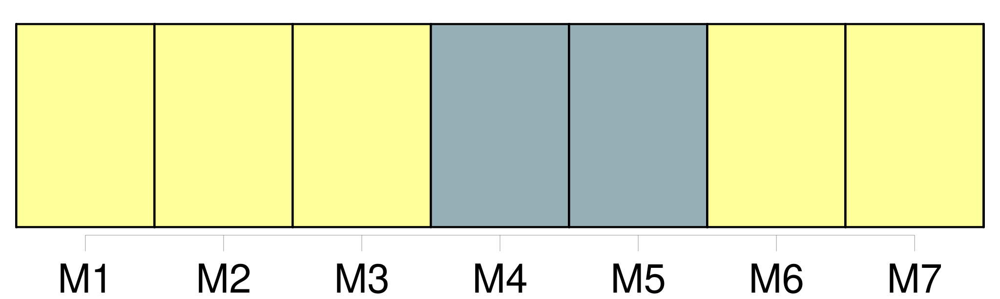
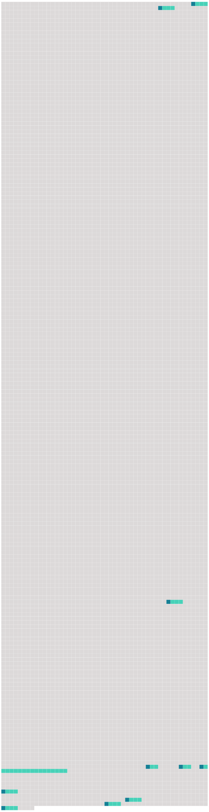

Longueur nb maillons : 10 mentions |
  |
b ) À cette fin : [237 phrases]
Lors de l'adoption de programmes et de mesures aux fins de la présente annexe, les parties contractantes exigent, soit individuellement, soit conjointement, le recours : [50 phrases]
[Meilleure pratique environnementale] L'expression « [meilleure pratique environnementale] » désigne [la mise en œuvre de la combinaison la mieux adaptée de mesures et de stratégies de lutte environnementales] [2 phrases]
Pour déterminer la combinaison de mesures qui constitue [la meilleure pratique environnementale] en général ou dans des cas particuliers, une attention particulière sera accordée : [1 phrases]
Il s'ensuit donc que, dans le cas d'une source donnée, [la meilleure pratique environnementale] évoluera dans le temps en fonction des progrès techniques, des facteurs économiques et sociaux, ainsi que de l'évolution des connaissances et de la compréhension scientifiques. [1 phrases]
Si la réduction des apports qui résulte du recours à [la meilleure pratique environnementale] ne conduit pas à des résultats acceptables sur le plan de l'environnement, des mesures complémentaires doivent être appliquées et [la meilleure pratique environnementale] doit être redéfinie. |
 |
La ressource peut être téléchargée sur la page Ortolang
Si vous avez des questions ou vous voyez des erreurs, merci d'envoyer un mail à silvia.federzoni89@gmail.com
Site développé par S. Federzoni (contact)